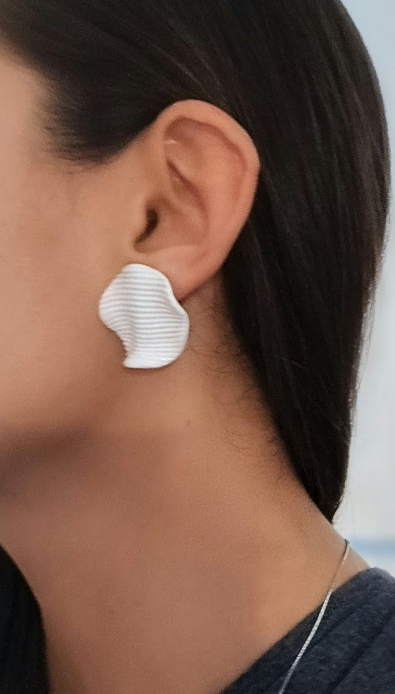
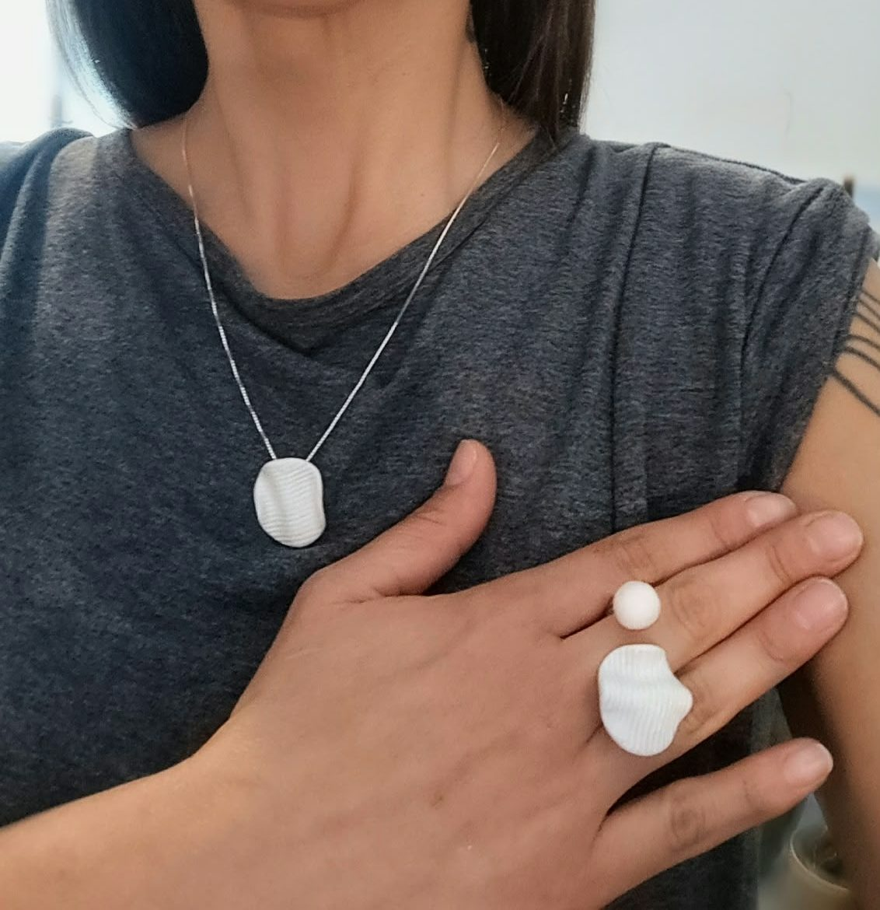
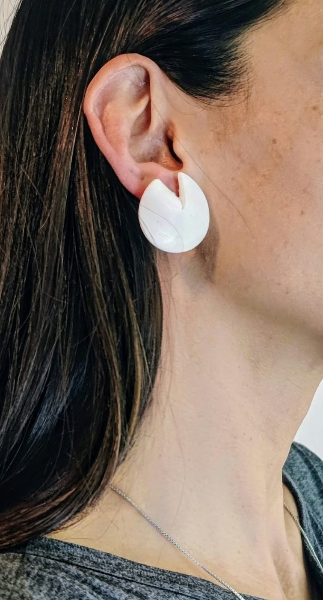
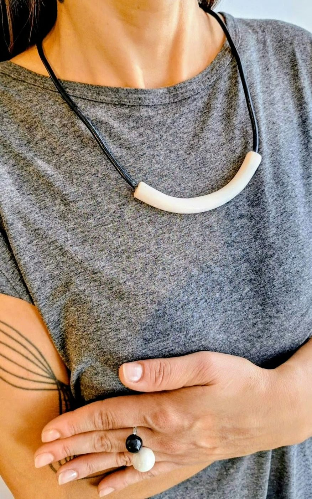
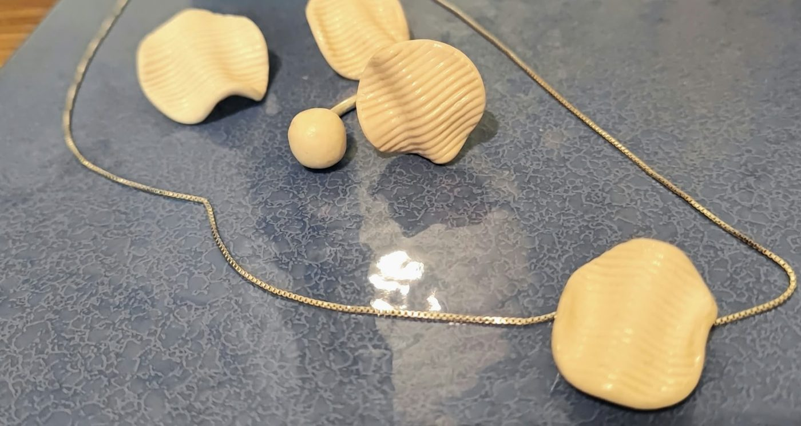
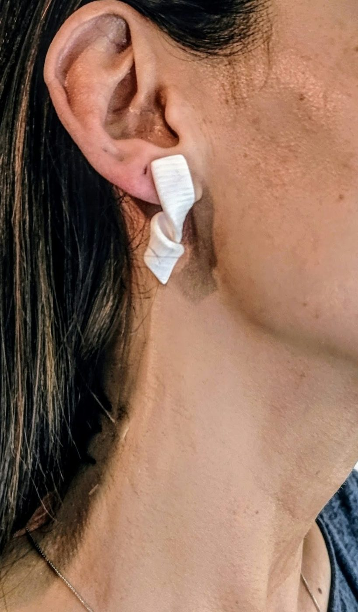
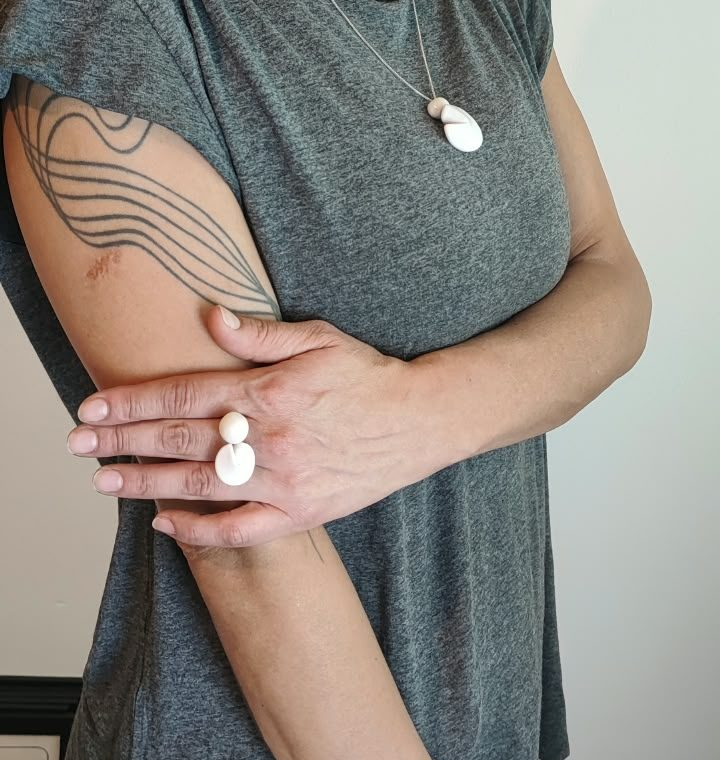
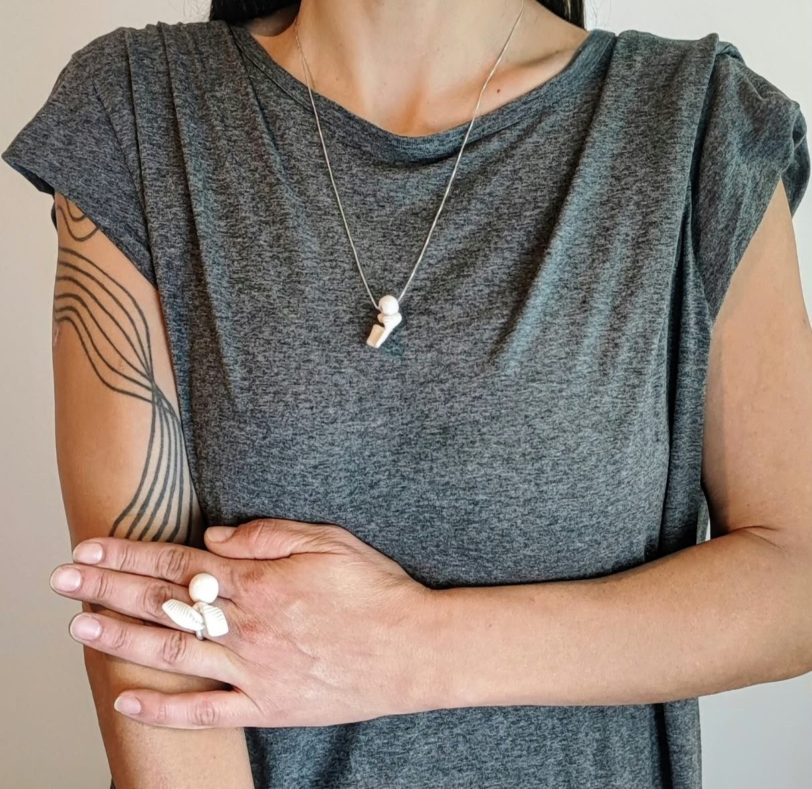
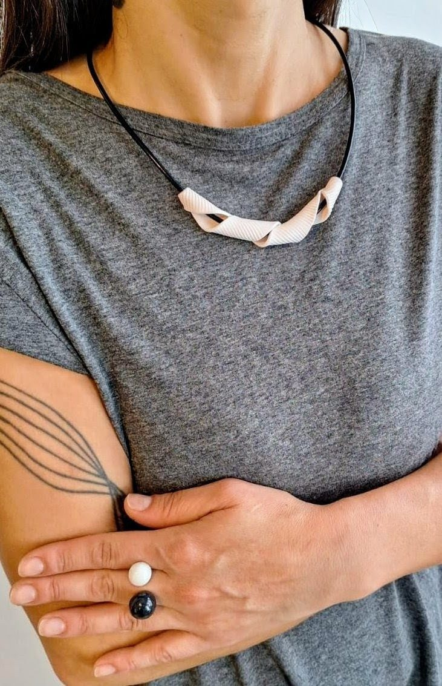

Gioielli che seguono il tuo ritmo.
Pezzi in argilla polimerica, fatti a mano uno per uno, per una quotidianità ricercata. Una coccola speciale da fare a te stessa, nei giorni lenti e in quelli più intensi.
Scopri i pezziIl vero lusso, oggi, è sentirsi sé stesse.
Non solo un gioiello, ma una storia da indossare: superfici rigate, pieghe morbide, forme che sembrano tessuto. Pensati per accompagnarti ogni giorno, senza dover scegliere tra bellezza e praticità.
Unico, davvero
Ogni pezzo è diverso e irripetibile. Le piccole variazioni sono il segno della mano che lo ha fatto.
Per ogni momento
Dal look casual a quello più ricercato, si adatta con naturalezza, in equilibrio tra estetica e funzionalità.
Slow fashion
Non si accumula: si costruisce uno stile coerente e duraturo, un pezzo alla volta.
Bianco
Onde, nastri e cerchi intagliati: forme essenziali in bianco, da portare da sole o insieme.











Colore
Giallo, verde e blu, in tinta unita o mescolati: orecchini e anelli per i giorni in cui hai voglia di luce.

Un pezzo pensato per te.
Se cerchi un gioiello che dialoghi con ciò che già possiedi, un vestito che ami, una palette che ti rappresenta, possiamo progettarlo insieme. Scrivici e raccontaci la tua idea.
ScriviciTi piace un pezzo?
Scrivici per sapere se è disponibile, per vederlo da vicino o per un'idea tutta tua.